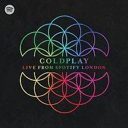
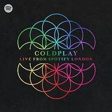

视频
视频 乐队介绍
乐队介绍Coldplay
基本信息
酷玩乐队（Coldplay），英国摇滚乐队，1996年成立于伦敦，由主唱克里斯·马汀、贝斯手盖伊·贝瑞曼、吉他手强尼·邦蓝以及鼓手威尔·查平组成。创意总监及前经纪人菲尔·哈维通常被视作乐队的第五个成员。
1998年，乐队发行了首张EP《Safety》。1999年，与帕洛风唱片签约。2000年，推出首张录音室专辑《Parachutes》，该专辑获得了第44届格莱美奖最佳另类音乐专辑奖 。2002年，第二张录音室专辑《A Rush Of Blood To The Head》发行，该专辑全球累计销量超过1500万张 。2003年，乐队凭借歌曲《In My Place》获得第45届格莱美奖最佳摇滚乐队奖，第二张录音室专辑获得了最佳另类音乐专辑奖 。2004年，其单曲《Clocks》获得第46届格莱美奖年度制作奖。2005年，发行第三张录音室专辑《X&Y》，该专辑以830万张的全年销量成为年度全球最畅销专辑。
早年经历
酷玩乐队的成员都来自普通的工人家庭。克里斯·马汀从小就开始弹钢琴，15岁开始已经混迹于各种乐队，并且得到过汤姆·威兹的称赞。强尼·邦蓝受到了埃里克·克莱普顿、吉米·亨德里克斯等吉他手的影响，从11岁开始弹奏吉他。来自苏格兰的盖伊·贝瑞曼则受到了一些放克音乐的熏陶而拿起了贝斯。再加入酷玩乐队之前威尔·查平曾经演奏过吉他、贝司、笛子等各种乐器 。
1996年9月，刚进入伦敦大学学院的克里斯·马汀与强尼·邦蓝相遇，在之后的学年里计划着组建一个乐队。最后他们组建了一个叫做“Pectoralz”的乐队，期间盖伊·贝瑞曼也加入了他们。1997年，乐队重新更名为“Starfish”，也已经在许多俱乐部中完成了多场演出。不久，威尔·查平也作为鼓手加入了他们。乐队最终正式更名为“酷玩乐队” 。
演艺经历
2008年，推出第四张录音室专辑《Viva La Vida Or Death And All His Friends》，该专辑以660万张的销量成为全球专辑年度销量冠军 ；专辑内的单曲《Viva La Vida》获得了美国公告牌百强单曲榜冠军 。2009年，在第51届格莱美奖中获得三个奖项 。2011年，推出第五张录音室专辑《Mylo Xyloto》 。2014年，第六张录音室专辑《Ghost Stories》正式发行 。
2015年，推出第七张录音室专辑《A Head Full Of Dreams》。2016年，登上第五十届超级碗中场秀 。2019年，发行第八张录音室专辑《Everyday Life》 。2021年5月7日，酷玩乐队发布第九张专辑首支单曲《Higher Power》。
1998年，酷玩乐队在菲尔·哈维的资助下发行了只有500张的EP《Safety》 ；12月，独立音乐厂牌凶猛熊猫唱片与乐队签下了一份短期的唱片发行合约 ；同年，乐队在曼彻斯特演出时被一位星探相中，他们被推荐给了帕洛风唱片 ；此外，他们在另一处的表演还被英国音乐杂志《NME》的乐评人相中 。
1999年，通过凶猛熊猫发行了他们的第一支单曲《Brothers & Sisters》 ；4月，乐队被百代唱片旗下的帕洛风唱片签下 ；10月，通过帕洛风唱片发行了第二张EP《The Blue Room》 ；年底，被杂志《NME》评为“2000年最值得被期待的乐队” 。
2000年1月，酷玩乐队在拉斯哥开启了他们的首次世界巡回演唱会“Parachutes Tour”；随后，连续推出了单曲《Shiver》和《Yellow》 ，其中《Yellow》成为酷玩乐队第一首打进英国排行榜前五的歌曲 ；7月10日，酷玩乐队推出了他们首张录音室专辑《Parachutes》，收录了《Trouble》《We Never Change》《Everything's Not Lost》等歌曲；该专辑登上了英国流行专辑榜的榜首，并入围了水星音乐奖 ，获得了第44届格莱美奖最佳另类音乐专辑奖，其全球累计销量超过了850万张 [1-2] ；11月，专辑《Parachutes》通过Nettwerk公司在美国发行 。
2001年，第21届全英音乐奖揭晓，酷玩乐队获得最佳英国乐队奖，专辑《Parachutes》则获得了最佳英国专辑奖 ；同年，在NME音乐奖上获得了包括最佳新人在内的三个奖项 。
2002年3月，酷玩乐队在爱丁堡拉开了“心血来潮”（A Rush Of Blood To The Head）世界巡演的序幕；8月，第二张录音室专辑《A Rush Of Blood To The Head》正式发行，该专辑上市首周以27万4千张的销量取得了英国流行专辑榜的冠军 ，还在美国公告牌专辑榜排到了第五名 ，其全球累计销量超过了1500万张 ；该专辑在第45届格莱美奖上获得了最佳另类音乐专辑奖，凭借歌曲《In My Place》获得最佳摇滚乐队奖 ，专辑单曲《Clocks》获得了第46届格莱美奖年度制作奖 。
2003年，酷玩乐队获得了第23届全英音乐奖的最佳英国乐队奖，专辑《A Rush Of Blood To The Head》获得了最佳英国专辑奖 ；8月28日，出席第20届MTV音乐录影带大奖，其歌曲《The Scientist》获得了最佳突破音乐录影带、最佳导演与最佳团体音乐录影带三个奖项 ；11月初，发行了演唱会录像《Coldplay Live 2003》，并推出了相关的现场专辑，记录了乐队在澳大利亚悉尼贺登馆举办的演出 ；11月6日，获得MTV欧洲音乐奖最佳组合奖 。
2004年，酷玩乐队淡出公众视线，投入专辑的制作。2005年4月29日，在美国天堂市开启了“扭曲逻辑”（Twisted Logic）世界巡回演唱会；5月23日，发行单曲《Speed Of Sound》，作为第三张录音室专辑的先行单曲 ，该曲取得了英国流行单曲榜的亚军 ，并获得了第26届全英音乐奖最佳英国单曲奖 ；6月6日，发行第三张录音室专辑《X&Y》，该专辑以830万张的全年销量被国际唱片业协会认证为年度全球最畅销专辑 ，获得了第26届全英音乐奖最佳英国专辑奖 ；其全球累计销量达1300万张 ；9月，《Fix You》作为专辑的主打单曲发行，该曲取得了英国流行单曲榜的第四名 ；10月，获得Q音乐奖世界最佳乐队奖 ；11月，MTV欧洲音乐奖揭晓，酷玩乐队获得最佳英国与爱尔兰艺人奖，《Speed Of Sound》获得了最佳歌曲奖 。2006年，在第48届格莱美奖颁奖典礼上表演歌曲《Talk》。2007年3月，发行单曲精选辑《The Singles 1999–2006》。
2008年，酷玩乐队了开启第四次世界巡回演唱会“Viva La Vida Tour”（玩酷人生）；5月，发行四专的先行单曲《Violet Hill》 ，该曲在英国流行单曲榜取得了第八名 ；6月，推出第四张录音室专辑《Viva La Vida Or Death And All His Friends》，专辑封面是欧仁·德拉克罗瓦的画作《自由引导人民》 ，该专辑以660万张的销量成为全球专辑年度销量冠军 ，获得了第51届格莱美奖最佳摇滚专辑奖 ；其全球累计销量达1000万张 ；专辑内的单曲《Viva La Vida》登上了全球30多个国家的音乐排行榜的榜首，获得了美国公告牌百强单曲榜冠军 ；该曲获得了第51届格莱美奖年度歌曲奖，酷玩乐队凭借该曲获得了最佳流行乐队/组合奖 ；10月，获得了Q音乐奖世界最佳乐队奖 ；11月24日，发行EP《Prospekt's March》，封面是欧仁·德拉克罗瓦的油画作品《普瓦捷会战》 ；12月，与凯莉·米洛合作的公益单曲《Lhuna》发行。2009年，在第51届格莱美奖颁奖典礼上与JAY-Z合作表演了歌曲《Lost+》《Viva La Vida》 ；5月，现场实况录音专辑《LeftRightLeftRightLeft》发行，提供网络免费下载 ；12月8日，《滚石》杂志公布“十年最佳艺人”读者评选结果，酷玩排名第4。2010年9月，作为表演嘉宾参加苹果2010秋季新品发布会 ；12月，推出圣诞单曲《Christmas Lights》。2011年5月31日，在伦敦拉开第五次世界巡回演唱会“Mylo Xyloto Tour”（彩绘人生）的序幕；6月3日，推出五专的第一主打单曲《Every Teardrop Is A Waterfall》；6月25日，发行了EP《Every Teardrop Is A Waterfall》，除了同名单曲外，还多收录了《Major Minus》《Moving To Mars》两首歌曲 ；9月12日，五专的第二主打单曲《Paradise》正式发行 ，该曲取得了英国流行单曲榜冠军 ，还被电影《少年派的奇幻漂流》《丛林之王》分别用作主题曲和插曲 ；10月19日，酷玩乐队在苹果公司为史蒂夫·乔布斯举办的纪念仪式上表演了《Fix You》等歌曲；10月24日，第五张录音室专辑《Mylo Xyloto》正式发行，与蕾哈娜合作的歌曲《Princessof China》被收录 ；该专辑以44万7千张的首周销量空降了公告牌专辑榜冠军，获得了公告牌音乐奖的最佳摇滚专辑和最佳另类专辑两个奖项 ；同时，酷玩乐队还获得了Q音乐奖当代最佳艺人奖 。2012年2月，获得第32届全英音乐奖最佳英国乐队奖 ；9月，酷玩乐队与Jay-Z、蕾哈娜等艺人共同参加了2012年伦敦残奥会闭幕式，演唱了《Us Against The World》《Yellow》《Clocks》《Paradise》《Viva La Vida》等歌曲 ；11月，发行演唱会实况纪录及现场专辑《Coldplay Live 2012》。2013年2月，获得第33届全英音乐奖最佳现场音乐人奖；同年，献唱电影《饥饿游戏2：星火燎原》主题曲《Atlas》 ，该曲获得了第17届好莱坞电影奖年度歌曲奖 ，入围了第71届金球奖最佳原创歌曲奖 ；年底，由于华纳兄弟唱片公司从百代唱片收购了帕洛风唱片，酷玩乐队作品的北美发行由华纳旗下的大西洋唱片负责 。
2014年2月，酷玩乐队释出了迷幻民谣风格的歌曲MV《Midnight》，该曲于4月份正式作为单曲发行 ；3月，发行六专的首发单曲《Magic》 ，该曲MV与章子怡一起拍摄；5月2日，有艾维奇制作的电子音乐单曲《A Sky Full Of Stars》正式发行，该曲取得了公告牌百强单曲榜的第十名 ；5月16日，推出第六张录音室专辑《Ghost Stories》，该专辑取得了全球70多个国家的ITunes即使下载榜冠军 ，以38万3千张的首周销量登顶公告牌专辑榜，获得公告牌音乐奖最佳摇滚专辑奖 ；同年，酷玩乐队在德国、日本、澳大利亚等地举办了总计9场的“鬼故事”巡演；11月24日，酷玩乐队推出了巡演的实况录像以及现场专辑《Ghost Stories Live 2014》 ；12月，发行为安吉丽娜·朱莉执导电影《坚不可摧》创作并献唱的主题曲《Miracles》 。
2015年10月25日，酷玩乐队获得了MTV欧洲音乐奖最佳摇滚艺人奖 ；11月6日，发行充满放克元素的单曲《Adventure Of A Lifetime》 ；12月4日，推出第七张录音室专辑《A Head Full Of Dreams》，与碧昂斯、诺尔·加拉格、奥巴马等人进行了合作，专辑以23万6千张的首周销量空降英国流行专辑榜亚军 。
2016年1月，与碧昂斯合作的单曲《Hymn For The Weekend》作为七专的主打发布，MV特地到印度实地取景拍摄，以印度洒红节为背景 ；2月7日，与碧昂斯、布鲁诺·马尔斯一同登上第五十届NFL超级碗中场秀，演唱了《Viva La Vida》《Paradise》《Adventure Of A Lifetime》等歌曲 ；2月17日，获得NME音乐奖神样天才奖 ；2月25日，获得了第36届全英音乐奖最佳英国乐队，这是他们第四次获得该奖项 ；3月31日，开启第7次全球巡演“A Head Full Of Dreams Tour”（梦过头） ，该巡演总计114场，经过了31个国家的76个城市，吸引了约539万名观众，取得了约5.23亿美元的总票房 ；该巡演获得第45届全美音乐奖年度巡演奖 、第24届公告牌音乐奖最佳摇滚巡演奖 ；6月26日，乐队参加了格拉斯顿伯里音乐节的闭幕现场 ，他们在音乐节上向因交通事故不幸身亡的Viola Beach乐团致敬的场面被NME音乐奖授予了年度最佳音乐时刻 ；11月，再次获得MTV欧洲音乐奖最佳摇滚艺人奖 。
2017年2月22日，推出与烟鬼组合合作的电子音乐单曲《Something Just Like This》 ，该曲在公告牌百强单曲榜最高取得了季军，获得了第25届公告牌音乐奖最佳舞曲/电子单曲 ；3月2日，推出克里斯·马汀献给前妻的单曲《Hypnotised》；7月14日，发行EP《Kaleidoscope》，收录了《All ICanThinkAboutIsYou》《A L I E N S》等歌曲 ；11月，获得MTV欧洲音乐奖最佳摇滚艺人奖 。
2018年，参与艾尔顿·约翰致敬专辑《Revamp & Restoration》的录制，翻唱了歌曲《We All Fall In Love Sometimes》 ；11月，酷玩乐队的纪录片《充满梦想》上映，该片回溯了酷玩乐队的成名史 ；11月28日，酷玩乐队以“Los Unidades”的名字与法瑞尔·威廉姆斯、Jozzy合作发行了单曲《E-Lo》 。
2019年11月22日，正式发行第八张录音室专辑《Everyday Life》，该专辑由“Sunrise”“Sunset”两部分组成，各收录了八首歌曲 。
2021年5月7日，酷玩乐队Coldplay回归新单曲《Higher Power》首播，这是Coldplay第九张专辑的首支单曲，新专辑预计在2021年11月至12月期间发布。
个人最爱专辑
 
